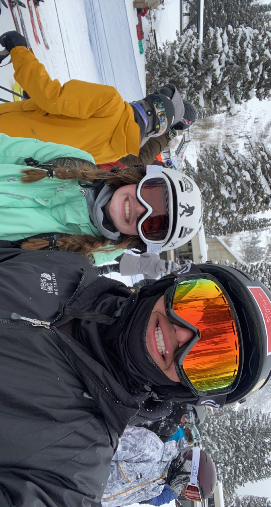
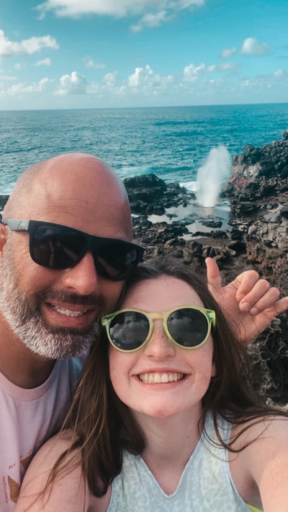

Hey! My name is Sydney Telford. I am a freshman at Brigham Young University in Provo, Utah. I am originally from Parker, Colorado.
I love spending time in the mountains. Skiing, hiking, and just being in nature makes me so happy. I also love longboarding.

Another thing I love to do is travel. My favorite place I've been is Hawaii. I've been there with my famiy a couple times and everytime
it gets better. If I could live anywhere, I would live in Hawaii. Hiking and exploring in Hawaii has been my favorite thing to do there.
Although, I do want to do learn how to surf next time I'm in Hawaii.

My current major is Human Resources Managment and I am so excited. I am interested in a lot of different areas of the field. My top three areas are:
Compensation and Benefits
Training and Onboarding
Recruiting
I love being involved with the Society of Human Resources Management club here at BYU.
It has given me great experience and exposure to the major since I have yet to be admitted into the program. I can't wait to see what the future holds!